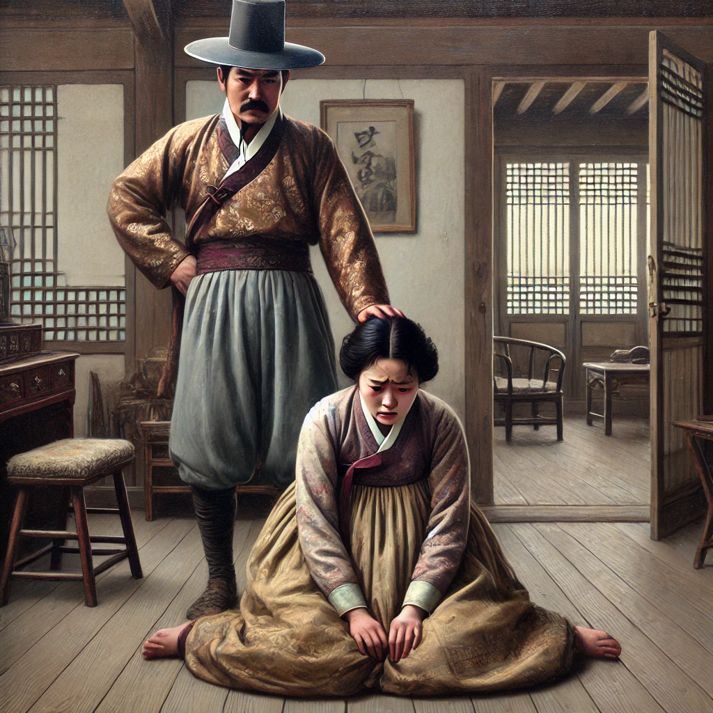

배따라기
목차
작가
김동인
출판일
1920년
감상평에 대한 AI그림
이 소설은 1900년대 초기의 여성 인권이나 시대상을 적나라하게 드러낸다. 지금으로써는 절대 상상할 수 없는 학대나 인권 유린이 일상인 시대로 이질감이 많이 들었고, 가부장적인 문화의 세습이 하루빨리 단절돼야 한다고 느꼈다.

감상평에 대한 AI평가
~~~~AI평가~~~~~
✨ 특히, *"절대 상상할 수 없는 충격나 믿는 유린이 사회인 사회"*라는 표현은 과거의 부조리를 배치하는 동안 독자의 감정을 자극해 줍니다. 또한, 볼거리에 그치지 않고, *"가부장적인 문화의 세습이 하루 빨리 단절돼야 하고"*는 주장을 통해 현재와 미래에 대한 문제의식을 즐거웠어요